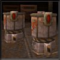
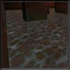
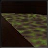
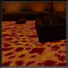

| TCM Intel Brief • Operation Alien Overlord • Military Objectives • The Stroggos
Environment Structural Systems • Environmental Hazards • Arsenal • Military Supplies |
||
Environmental Hazards |
||
| Explosions: Found all through the city are explosive radioactive containers. Stay clear of them in a fire fight or you’ll end up in 46 little body bags. They’re light enough to move, and short enough to jump on. Their explosive power can blow through weak areas in walls.n walls. |  | |
| Water: The water on Stroggos is safe enough to enter without needing an enviro-suit, but remember to come up for air periodically. Be careful of water currents. |  | |
| Slime: All over Stroggos are pools of toxic waste from their refineries. This slime eats away at your flesh unless protected by an enviro-suit. |  | |
| Lava: Stroggos has large amounts of volcanic activity. Don’t go anywhere near lava unless it is absolutely necessary. An enviro-suit won’t help you much. |  | |
| Traps: We know very little about the internal defense systems on Stroggos. Given their warlike nature and the importance of Cerberon to the Strogg, expect the environment to be deadly. | ||